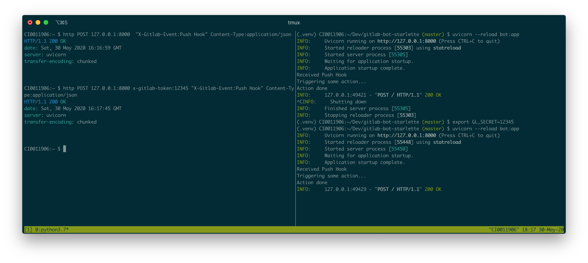
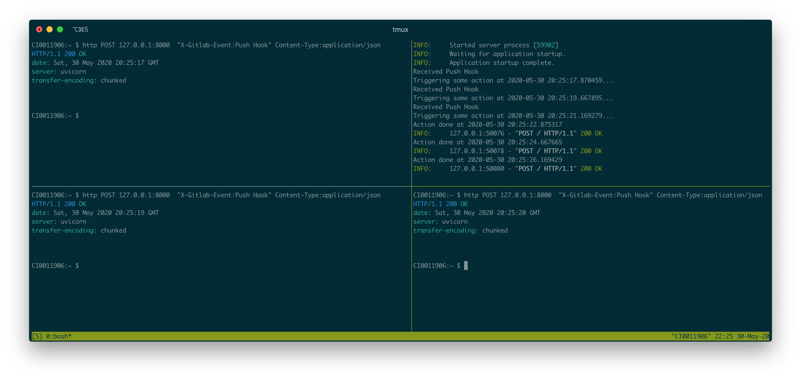
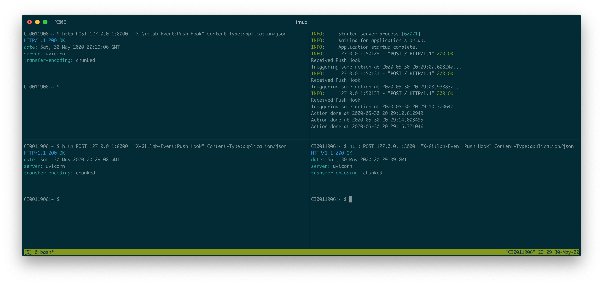
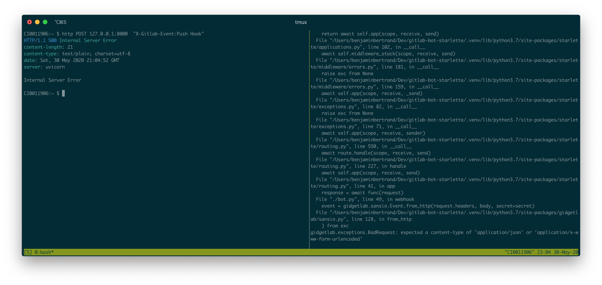
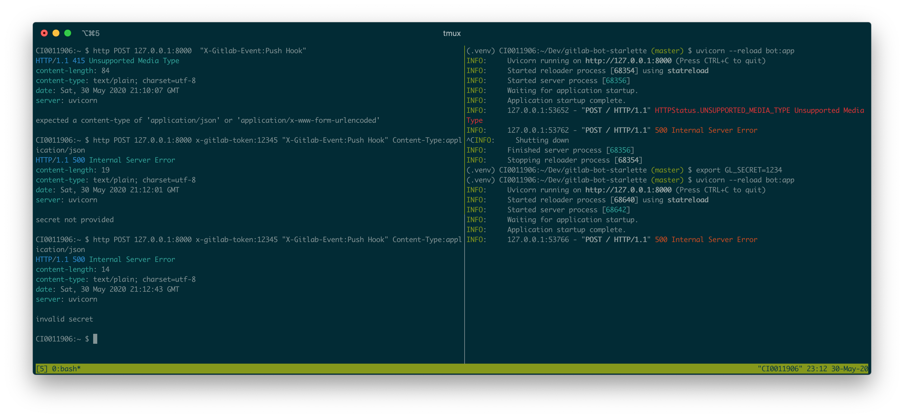

Building a GitLab bot using gidgetlab, Starlette and HTTPX
I previously described how to create a GitLab bot using gidgetlab and aiohttp. I recently read and became curious about FastAPI and Starlette. The latter seemed like a good fit for a GitLab bot and a nice way to experiment with it for me.
If you haven't heard about gidgetlab, I recommend starting with my previous post. I won't explain again how to create an access token or configure a webhook.
To build a bot, we need both an HTTP client and server. aiohttp provides both. Starlette is a lightweight ASGI framework. It doesn't include an HTTP client. gidgetlab supports several HTTP clients. I recently added HTTPX, thanks to gidgethub once again. It's described as the next-generation HTTP client for Python and will play well with Starlette.
Let's start by a small example on how to use gidgetlab with HTTPX.
Using gidgetlab with HTTPX on the command line
Install gidgetlab and httpx
Install gidgetlab and httpx if you have not already. Using a virtual environment
is recommended.
python3 -m pip install gidgetlab[httpx]
Create an issue
We'll use the same example as in the previous post but replace aiohttp with httpx.
Copy the following into the file create_issue.py using your favorite editor:
import asyncio
import os
import httpx
import gidgetlab.httpx
async def main():
async with httpx.AsyncClient() as client:
gl = gidgetlab.httpx.GitLabAPI(
client, "gidgetlab", access_token=os.environ.get("GL_ACCESS_TOKEN")
)
await gl.post(
"/projects/beenje%2Fstrange-relationship/issues",
data={
"title": "We got a problem",
"description": "You should use HTTPX!",
})
asyncio.run(main())
If you check the example with aiohttp from my previous post, you can see it's pretty similar.
$ diff -u aiohttp_create_issue.py create_issue.py
--- aiohttp_create_issue.py 2020-05-31 21:31:52.000000000 +0200
+++ create_issue.py 2020-05-31 21:26:19.000000000 +0200
@@ -1,12 +1,14 @@
import asyncio
import os
-import aiohttp
-from gidgetlab.aiohttp import GitLabAPI
+import httpx
+import gidgetlab.httpx
async def main():
- async with aiohttp.ClientSession() as session:
- gl = GitLabAPI(session, "beenje", access_token=os.getenv("GL_ACCESS_TOKEN"))
+ async with httpx.AsyncClient() as client:
+ gl = gidgetlab.httpx.GitLabAPI(
+ client, "gidgetlab", access_token=os.environ.get("GL_ACCESS_TOKEN")
+ )
await gl.post(
"/projects/beenje%2Fstrange-relationship/issues",
data={
@@ -15,5 +17,4 @@
})
-loop = asyncio.get_event_loop()
-loop.run_until_complete(main()
+asyncio.run(main())
The only real difference is the use of async with httpx.AsyncClient() as client instead of
async with aiohttp.ClientSession() as session.
asyncio.run() was introduced in Python 3.7 and is the new way to run an async function.
Save the file and run it in the command line after exporting your GitLab access token.
In Unix / Mac OS:
export GL_ACCESS_TOKEN=<your token>
In Windows:
set GL_ACCESS_TOKEN=<your token>
python3 -m create_issue
There should be a new issue created in the strange-relationship project. Check it out: https://gitlab.com/beenje/strange-relationship/issues
Using Starlette to build a GitLab bot
gidgetlab provides a GitLabBot class to create an aiohttp web server that reponds to GitLab webhooks. Let's build the equivalent of the following aiohttp based bot with Starlette:
from gidgetlab.aiohttp import GitLabBot
bot = GitLabBot("beenje")
@bot.router.register("Issue Hook", action="open")
async def issue_opened_event(event, gl, *args, **kwargs):
"""Whenever an issue is opened, greet the author and say thanks."""
url = f"/projects/{event.project_id}/issues/{event.object_attributes['iid']}/notes"
message = f"Thanks for the report @{event.data['user']['username']}! I will look into it ASAP! (I'm a bot)."
await gl.post(url, data={"body": message})
if __name__ == "__main__":
bot.run()
Starlette bot
In the same virtual environment as before install Starlette and uvicorn:
python3 -m pip install starlette uvicorn
Save the following in a file named bot.py:
import os
import httpx
import gidgetlab.routing
import gidgetlab.sansio
import gidgetlab.httpx
from starlette.applications import Starlette
from starlette.requests import Request
from starlette.responses import Response
from starlette.routing import Route
router = gidgetlab.routing.Router()
@router.register("Issue Hook", action="open")
async def issue_opened_event(event, gl, *args, **kwargs):
"""Whenever an issue is opened, greet the author and say thanks."""
url = f"/projects/{event.project_id}/issues/{event.object_attributes['iid']}/notes"
message = f"Thanks for the report @{event.data['user']['username']}! I will look into it ASAP! (I'm a bot)."
await gl.post(url, data={"body": message})
async def webhook(request: Request) -> Response:
"""Handler that processes GitLab webhook requests"""
body = await request.body()
secret = os.environ.get("GL_SECRET")
event = gidgetlab.sansio.Event.from_http(request.headers, body, secret=secret)
async with httpx.AsyncClient() as client:
gl = gidgetlab.httpx.GitLabAPI(
client, "gidgetlab", access_token=os.environ.get("GL_ACCESS_TOKEN")
)
await router.dispatch(event, gl)
return Response(status_code=200)
app = Starlette(routes=[Route("/", webhook, methods=["POST"])])
The Issue Hook handler is exactly the same as when using aiohttp. gidgetlab abstracts away the HTTP client used. To implement the bot, the only thing needed is an endpoint to handle webhook POST requests.
Run:
uvicorn --reload bot:app INFO: Uvicorn running on http://127.0.0.1:8000 (Press CTRL+C to quit) INFO: Started reloader process [40232] using statreload INFO: Started server process [40234] INFO: Waiting for application startup. INFO: Application startup complete.
That's it. We have an ASGI server running on port 8000 that can receive events from GitLab. We could test it by using ngrok as in the previous post. This time we'll just fake some events using httpie.
Testing with httpie
For testing purpose, let's add a dummy event handler that is easy to trigger.
@router.register("Push Hook")
async def dummy_action_on_push(event, gl, *args, **kwargs):
print(f"Received {event.event}")
print("Triggering some action...")
await gl.sleep(1)
print("Action done")
In one terminal, run:
uvicorn --reload bot:app
In another one:
http POST 127.0.0.1:8000 "X-Gitlab-Event:Push Hook" Content-Type:application/json
You should see the following output in each respective terminal:
Received Push Hook Triggering some action... Action done INFO: 127.0.0.1:58814 - "POST / HTTP/1.1" 200 OK HTTP/1.1 200 OK date: Wed, 27 May 2020 20:39:02 GMT server: uvicorn transfer-encoding: chunked
If you want to use a secret you should pass it on both sides:
export GL_SECRET=12345 uvicorn --reload bot:app http POST 127.0.0.1:8000 x-gitlab-token:12345 "X-Gitlab-Event:Push Hook" Content-Type:application/json
You can see both examples on the following screenshot.
Starlette startup and shutdown events
Starlette can register event handlers to run on startup and shutdown. Instead of creating a new httpx client on every new request, we could re-use the same.
async def create_client() -> None:
"""Startup handler that creates the GitLabAPI instance"""
client = httpx.AsyncClient()
app.state.gl = gidgetlab.httpx.GitLabAPI(
client, "gidgetlab", access_token=os.environ.get("GL_ACCESS_TOKEN")
)
async def close_client() -> None:
"""Shutdown handler that closes the httpx client"""
await app.state.gl._client.aclose()
async def webhook(request: Request) -> Response:
"""Handler that processes GitLab webhook requests"""
body = await request.body()
secret = os.environ.get("GL_SECRET")
event = gidgetlab.sansio.Event.from_http(request.headers, body, secret=secret)
await router.dispatch(event, request.app.state.gl)
return Response(status_code=200)
app = Starlette(
routes=[Route("/", webhook, methods=["POST"])],
on_startup=[create_client],
on_shutdown=[close_client],
)
In the create_client function, we also store the GitLabAPI instance on the app.state.
This allows us to access it using request.app in the request and to close the httpx client on application shutdown.
Background tasks
In the above code, the Response is only sent when all the dispatched event handlers have been executed.
Some event handlers might take some time to run if you trigger many actions or you might want to sleep
(asyncio.sleep of course not to block the event loop) between different actions.
You probably noticed that's actually exactly what I did in my dummy push hook handler.
To illustrate that let's increase the sleep and print the date in our handler:
import datetime
@router.register("Push Hook")
async def dummy_action_on_push(event, gl, *args, **kwargs):
print(f"Received {event.event}")
print(f"Triggering some action at {datetime.datetime.utcnow()}...")
await gl.sleep(5)
print(f"Action done at {datetime.datetime.utcnow()}")
If we send a Push Hook event, we'll only get a response after 5 seconds. Not great... We can see that the server isn't blocked. We can send several requests and they are all processed in parallel. But the response is only sent after the event handler is done.
Action done is printed before the 200 is sent.
When receiving a webhook, you should send the HTTP response as fast as possible. This is stated in GitLab's documentation: Your endpoint should send its HTTP response as fast as possible. If you wait too long, GitLab may decide the hook failed and retry it.
One way to achieve that would be to use a task queue like Celery or RQ to run the event handlers. I'm actually using RQ in an aiohttp bot I created.
A nice feature of Starlette is that you can attach a background task to a response.
We can thus run the dispatch function as a BackgroundTask. This will ensure that the response is sent
as soon as the event has been received and parsed:
from starlette.background import BackgroundTask
async def webhook(request: Request) -> Response:
"""Handler that processes GitLab webhook requests"""
body = await request.body()
secret = os.environ.get("GL_SECRET")
event = gidgetlab.sansio.Event.from_http(request.headers, body, secret=secret)
task = BackgroundTask(router.dispatch, event, request.app.state.gl)
return Response(status_code=200, background=task)
If we perform the same test as before we see that the event is dispatched only after the response was sent. It doesn't matter how long each handler takes.
Received Push Hook is printed after the 200 is sent.
Of course handlers shouldn't block the event loop!
As router.dispatch is an async function, Starlette will just await on it.
If an event handler is performing some blocking action, it should be run in a thread or process pool.
Otherwise the above code is all that is required.
Better error handling
One thing we didn't pay attention to is error handling.
What happens if gidgetlab.sansio.Event.from_http raises an Exception?
Starlette will return a 500 (Internal Server Error) HTTP response.
That's the proper thing to do.
Your endpoint should ALWAYS return a valid HTTP response.
But in the bot logs, we can see that exception. Not very clean.
We should catch those exceptions and handle them properly.
from starlette.responses import Response, PlainTextResponse
async def webhook(request: Request) -> Response:
"""Handler that processes GitLab webhook requests"""
body = await request.body()
secret = os.environ.get("GL_SECRET")
try:
event = gidgetlab.sansio.Event.from_http(request.headers, body, secret=secret)
except gidgetlab.HTTPException as e:
return PlainTextResponse(status_code=e.status_code, content=str(e))
except gidgetlab.GitLabException as e:
return PlainTextResponse(status_code=500, content=str(e))
task = BackgroundTask(router.dispatch, event, request.app.state.gl)
return Response(status_code=200, background=task)
Much nicer now! Everything is in place for a production ready bot.
Conclusion
I really enjoyed working with Starlette. It made building a GitLab bot with gidgetlab very easy.
We saw how to use Events and
Backroung Tasks. Being able to run the dispatch function
in the background is really perfect for our bot.
HTTPX and Starlette are definitvely my go-to frameworks for my next bot!
You can find the full source code used in this post on both GitLab and GitHub:
Comments
Comments powered by Disqus